Link to webpage: Webpage
Link to GitHub repository: RepoThey Tea on my Pot till I upsample
Overview
In this homework, we implemented code to linearly interpolate control points in the form of Bezier curves using de Casteljau's algorithm. We then extended it to Bezier surfaces where we interpolate along a value u first, then with each of the resulting Bezier curves giving us a point, we can interpolate on these new points using a new value v. We then implemented area-weighted vertex normals to apply shading such as Phong shading on to a teapot. We then implemented edge-flips and edge-splits which act as fundamental helper functions for our final upsampling method which allows us to uniformly add new vertices that makes the model appear higher resolution and gives us more precise texture, shading, and physics manipulation.
During our homework something we found interesting was that sometimes using more than 1 pre-split made the after upsampling image appeared with more bulges compared to just 1 pre-split. It's important to pay close attention to have sharp edges and creases cause strange patterns such as points or warping to occur when upsampling!
Section I: Bezier Curves and Surfaces
Part 1: Bezier curves with 1D de Casteljau subdivision
de Casteljaus algorithm is basically just using lerps on the edges between control points, since we have n - 1 edges, each level of the algorithm gives us one less point, we connect the edges on a parameter t that indicates how far along the edge we lerp on. We essentially lerp until we are left with one point, this point acts as our tracer for our bezier curve, as we change t from 0 to 1, we use our tracer point to draw out the bezier curve along all possible values of t.
How we implemented it was by first implementing 1 step of de Casteljau's algorithm which is just a single lerp stage using the formula (1-t)Pi + t pi+1. we do the on the first n-1 control points so that on our last call we don't get an out of bounds error, doing this step gives us new n-1 control points, so by repeating this this until we end up with only a singular point, we can get a tracer point that draws the bezier curve along the values of all t.
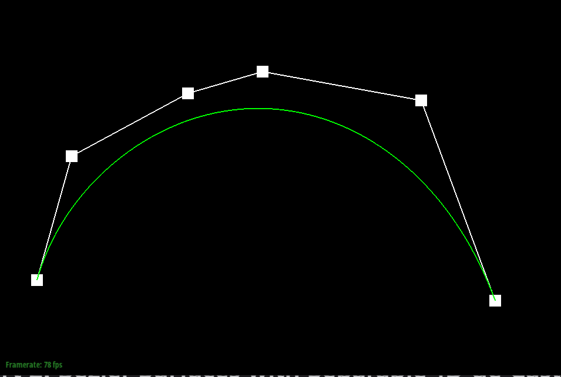
Step 1.
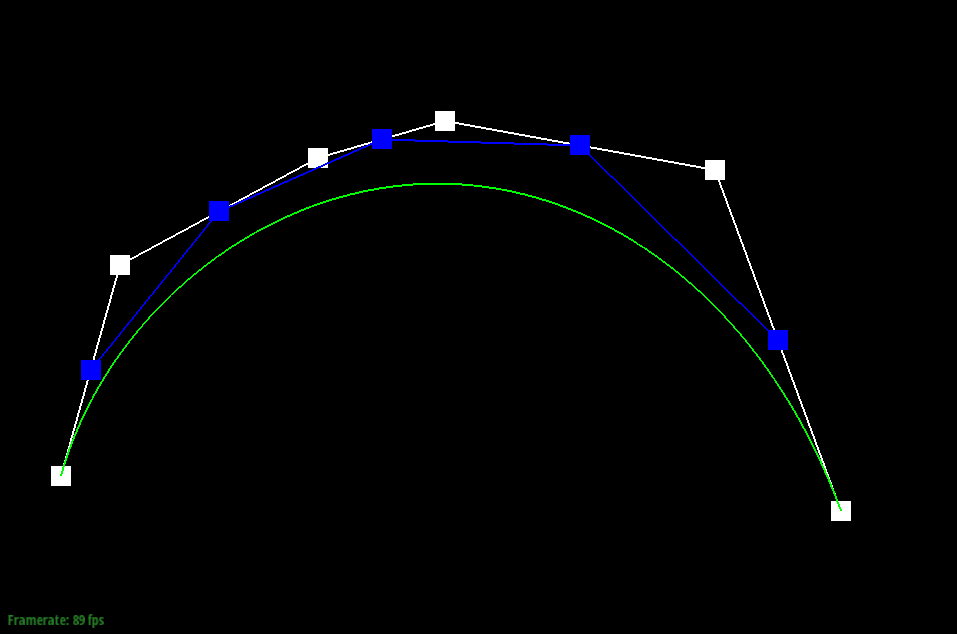
Step 2.
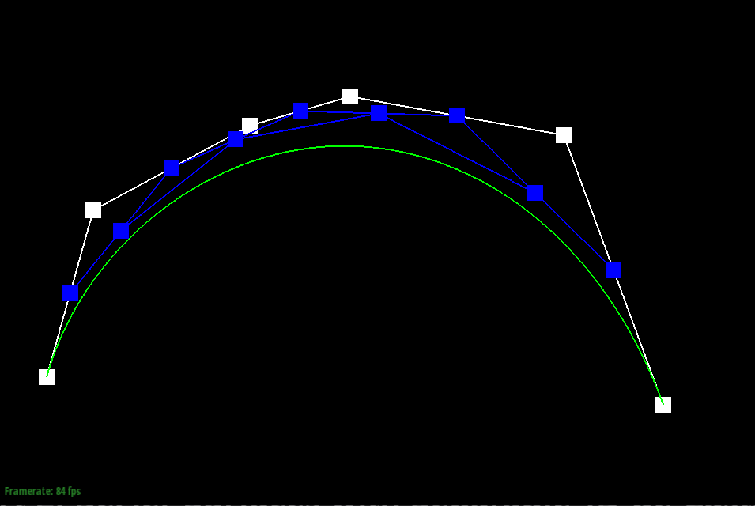
Step 3.
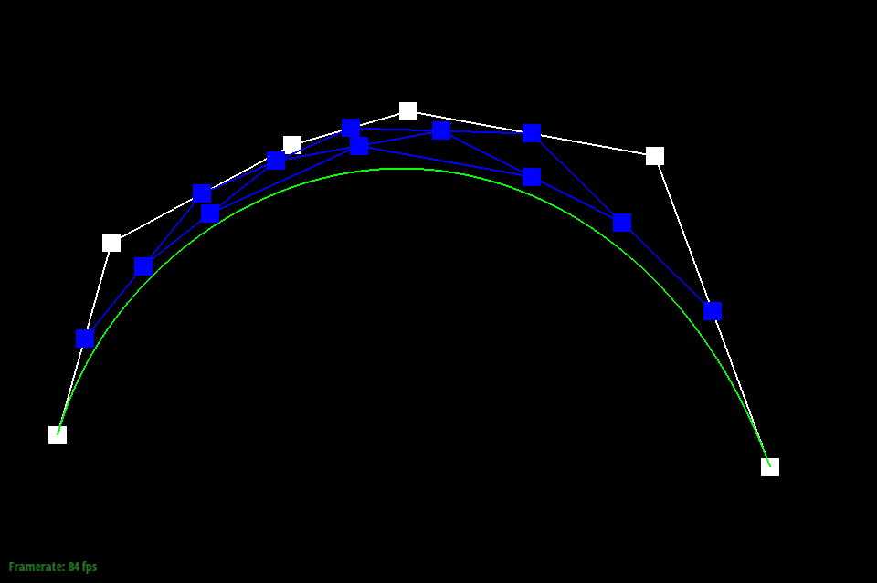
Step 4.
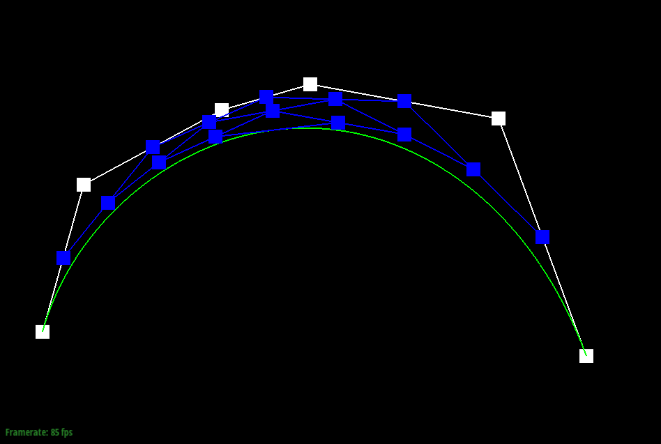
Step 5.
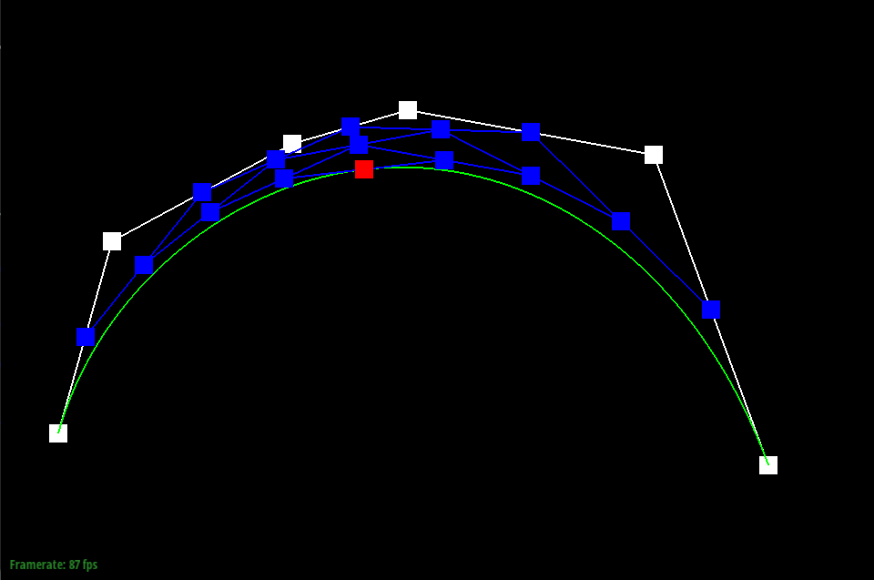
Final Step.
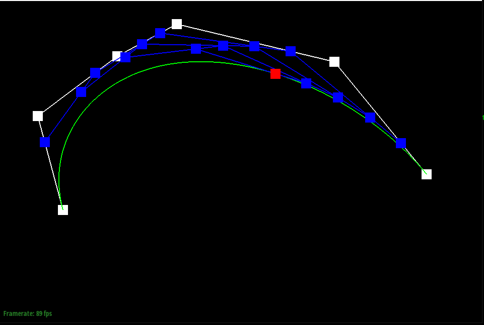
Slightly Different Bezier curve with different value of t.
Part 2: Bezier surfaces with separable 1D de Casteljau
de Casteljau algorithm extends to Bezier surfaces by first making bezier curves along one direction first such as along the x axis first and by doing it on some parameter u, we get 1 control point per bezier curve which results in n control points, 1 from each of the n bezier curves, we then run de Casteljau algorithm on these n points with a second parameter v in order to give us a bezier surface.
The way we implemented this was by first iterating through each of the n rows which had m control points each and running de Casteljau algorithm on these m points along the parameter u to end up with n curves and n points, and then using our second parameter v, we make a new bezier curve with the n points as control points and v as the parameter to describe a point on the Bezier surface.
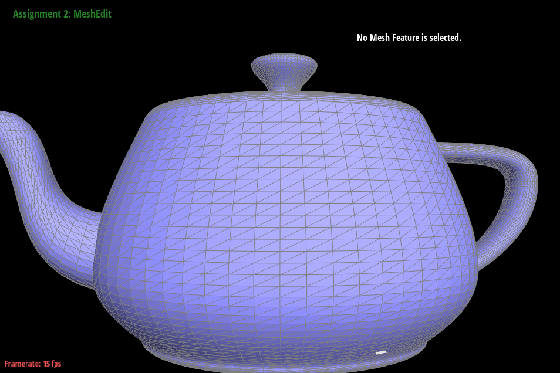
bez/teapot.bez
Section II: Triangle Meshes and Half-Edge Data Structure
Part 3: Area-weighted vertex normals
How we implemented the area-weighted vertex normals was by starting from our half edge, and then while moving to every other half edge, we grabbed the locations of the three vertices that make up the triangle that the current half edge belongs to, with these vertices, we could do subtraction to end up with vectors for the base and height of the triangles, we also grabbed the normal vector of each face since it is a member variable of the halfedge's face. Using the cross product and normalization, we calculate the area of the triangle and since we already have the normal vector we just multiply the area by this normal vector to weight the area by the normal, by doing this for all halfedges we get a sum of weighted areas. All we have to do afterwards is return the normalized sum to get the approximate unit normal.
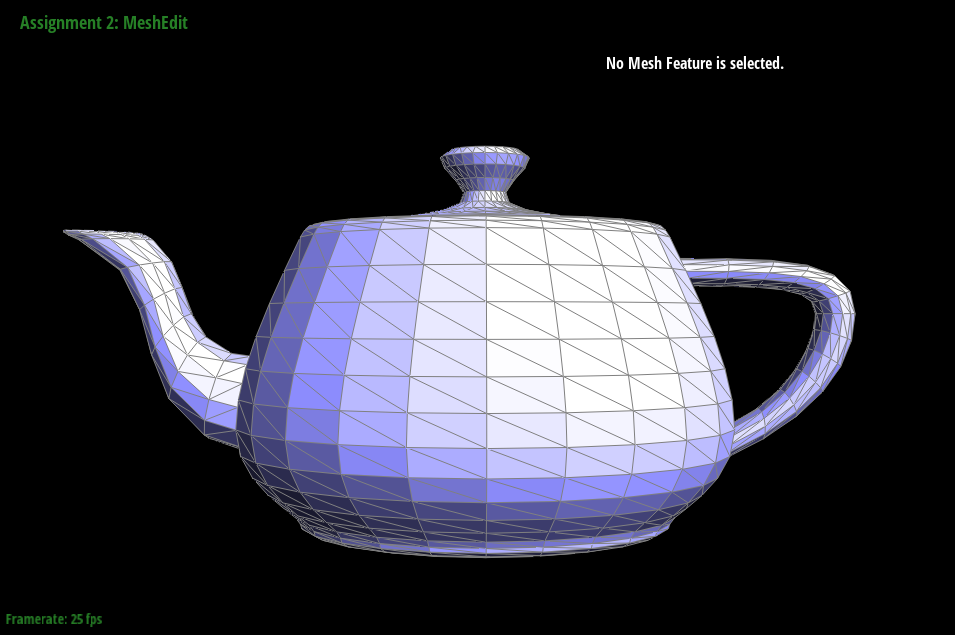
Default Flat Shading.
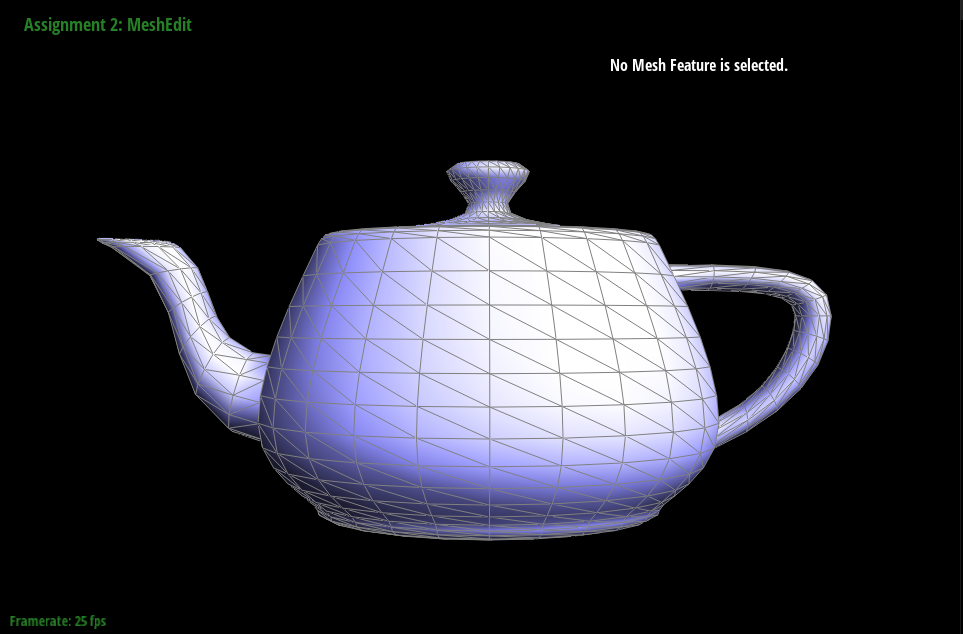
Phong Shading.
Part 4: Edge flip
To implement the edge flip operation, we first saved everything our current state which included all the half edges, all the vertices, all the edges, and all the faces. Then using the setNeighbors method we changed all the member variables of each half edge, so according to a drawing of the two triangles we made, we set the next, twin, vertex, edge, and face for every halfedge that we saved. Afterwards we set all the halfedge pointers in the faces, edges, and vertices we saved to a working and valid halfedge accoridng to our drawing, we then just simply return the original edge we were given which is now properly flipped. A problem we ran into was that when we flipped a diagonal edge, one of the faces would be a missing texure, in our debugging we figured out it was because we made a mistake and did not properly assign the right neighbors to some of the halfedges.
Default unflipped teapot.
One diagonal flipped.
Several diagonals flipped.
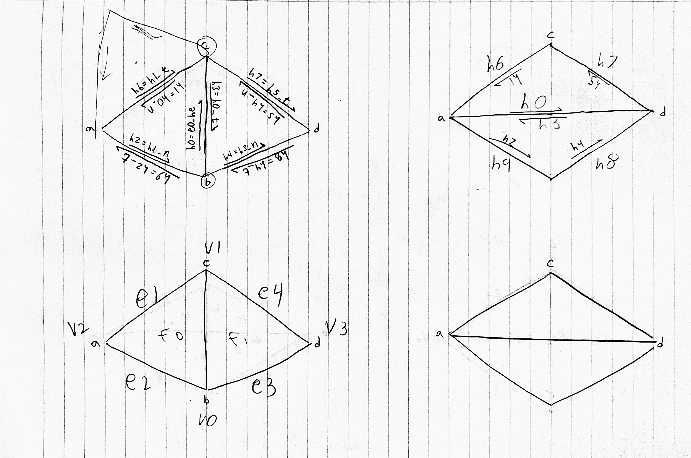
Diagram of EdgeFlip algorithm.
Part 5: Edge split
Our edge split algorithm builds upon the same process as edge flips, except we not only reassign but also add new pointers (for the new faces, vertices, and edges). In particular, splitting the median line turns it into a cross of four edges (but only three are new because the original middle line can be reassigned to be one of the four edges of the cross). We followed the same naming scheme for the outer halfedges, and added six new inner half edges, three new inner edges, two new inner faces, and one new midpoint vertex.
After drawing a new diagram for edge split, we decided to turn the middle line into the upper middle line after the middle edge is split. From there, the three new edges (and their six halfedges) go left, right, and down from the new mid point (which is weighted between the top and bottom original vertices). The original two faces are designated to the top two faces, and the two new faces are assigned to the bottom faces of the cross. Minimizing the changes from the edge split code made it easier to double-check our pointer assignments!
Debugging edge split was not as bad as edge flip after we understood the general workflow. The biggest hiccup came when we were calculating the mid point position, as we were trying to average between all four outer vertices, when we only had to consider vertices B and C. Small errors in setting the mesh neighbors also arose due to rushing the diagram reading, which caused the splits to sometimes delete entire faces.
Default unsplit teapot mesh.
Edges flipped along one vertical line, and split on the other side.
Combination of edge flips and splits on the same edges.
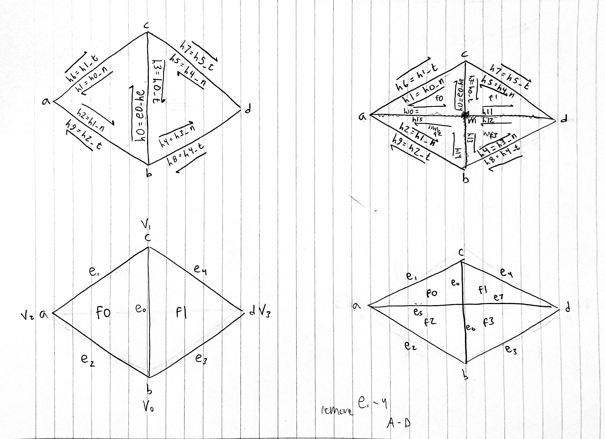
Diagram of EdgeSplit algorithm.
Part 6: Loop subdivision for mesh upsampling
To implement Loop subdivision for mesh upsampling, we first iterated over all vertices to calculate a new position for each vertex based on the subdivision rule, for a vertex we calculate a weight u which is 3/16 if the vertex has 3 neighbors, otherwise u = (3/8n) where n is the number of neighbors that the vertex has. We then sum the positions of the neighboring vertices and assign the vertex a new position as a weighted average of the original position and the sum of the neighboring positions. We also had to set the vertex's isNew variable to false since this is an old point
Next we had to calculate new positions for every edge. We did this through using a weighted average of the endpoints of each edge and the opposing vertices in the adjacent faces, we then store the new position of this edge on the edge itself. We then set the isNew variable for this edge to false since it is a current edge.
Then, we split every edge in the original mesh while avoiding splitting on new edges to avoid infinite loops. We do this by inserting a new vertex at each calculated edge position, we set each of these new vertices' isNew to true.
We then want to flip any edge that connects a new vertex to an old vertex, and finally we just update the vertices of the mesh using the original and new vertices.
In general, after loop subdivision, meshes tend to look more smooth and rounder, but sharp corners and edges still remain, as an example in the third case we tried to split on the creased edges on the cube, but after upsampling we see that these new edge vertices tend to become sharp points in the mesh. In the better second case, all symmetric edges are along faces or along edges rather than across sharp corners.